Menu

-Photoroom.png)
A Omne Imperium é uma empresa especializada em serviços contábeis, consultoria e tecnologia, focada em oferecer soluções inteligentes e personalizadas para construtoras, incorporadoras e empresas que buscam eficiência operacional através da automação com IA.
Ser referência nacional na integração entre contabilidade, consultoria financeira e tecnologia, proporcionando às empresas do setor imobiliário e de construção civil um ambiente de gestão mais eficiente, automatizado e estratégico.
Oferecer soluções contábeis, consultoria financeira e automação tecnológica para empresas do setor de incorporação e construção civil, garantindo eficiência, conformidade e inovação nos processos empresariais.
Inovação para otimizar processos, excelência na entrega de soluções, conformidade com normas vigentes, eficiência para maximizar resultados e compromisso com o cliente para um crescimento sustentável.
• O que é a Omne Imperium?
A Omne Imperium é uma empresa especializada em serviços contábeis, consultoria e tecnologia,
focada em oferecer soluções inteligentes e personalizadas para construtoras, incorporadoras
e empresas que buscam eficiência operacional através da automação com IA.
• Quais setores a Omne Imperium atende?
Atendemos principalmente os setores de construção civil, incorporação imobiliária, finanças
empresariais e tecnologia, oferecendo serviços adaptados a cada cliente.
• O que é o RET (Regime Especial de Tributação) e por que ele é
importante?
O RET permite a unificação do recolhimento de tributos para incorporadoras e construtoras,
simplificando a tributação e reduzindo a carga fiscal. Nossa equipe auxilia na correta
aplicação desse regime, garantindo conformidade e economia tributária.
• A Omne Imperium faz contabilidade para empresas que não são do
setor de construção
civil?
Sim! Embora sejamos especialistas na construção civil, atendemos empresas de diversos
setores, adaptando nossa contabilidade às necessidades específicas de cada negócio.
• Vocês auxiliam na regularização fiscal de empresas?
Sim! Atuamos na regularização de pendências fiscais e contábeis, prevenindo problemas com o
fisco e garantindo conformidade legal.
• O que é a Adequação Financeira e Operacional para Produção Caixa
GERIC?
O GERIC é um requisito da Caixa Econômica Federal para concessão de financiamentos
imobiliários. Auxiliamos empresas a se estruturarem financeiramente e operacionalmente para
atender às exigências do banco e garantir a aprovação do crédito.
• Como funciona a consultoria para recuperação de créditos
tributários?
Realizamos uma análise detalhada para identificar impostos pagos a maior e recuperar
créditos tributários de forma legal, incluindo PIS/COFINS e incentivos fiscais do setor
imobiliário.
• A Omne Imperium auxilia na certificação PBQP-H?
Sim! Prestamos consultoria completa para implementação e manutenção do PBQP-H, garantindo
que empresas da construção civil cumpram os requisitos para atuar em projetos financiados
por órgãos públicos.
• A Omne Imperium desenvolve sistemas personalizados?
Sim! Criamos ERPs, softwares de automação e assistentes virtuais personalizados, utilizando
Inteligência Artificial (IA) para aprimorar a eficiência operacional da empresa.
• Como funciona a automação de processos financeiros e
contábeis?
Desenvolvemos robôs com IA que automatizam tarefas como conciliação bancária, emissão de
notas fiscais, análise de fluxo de caixa e fechamento contábil, reduzindo erros e aumentando
a produtividade.
• A Omne Imperium trabalha com integração de sistemas?
Sim! Fazemos a integração de ERPs, APIs e outros sistemas empresariais, garantindo automação
inteligente e fluidez de informações entre diferentes plataformas.
• É possível contratar um assistente virtual para atendimento ao
cliente?
Sim! Criamos chatbots e assistentes virtuais baseados em IA, que podem ser usados para
atendimento comercial, suporte técnico e automação de processos internos.
• O que são os robôs de automação para processos financeiros,
contábeis e comerciais?
São soluções de IA que automatizam tarefas como emissão de relatórios financeiros, análise
de dados contábeis, controle de pagamentos e cobranças, além de otimização do atendimento ao
cliente e processos comerciais.
• Como faço para contratar os serviços da Omne
Imperium?
Você pode entrar em contato por e-mail, telefone ou WhatsApp para agendar uma consulta e
entender como podemos ajudar sua empresa.
• A Omne Imperium atende empresas de todo o Brasil?
Sim! Atendemos remotamente empresas em todo o país, oferecendo suporte completo para
contabilidade, consultoria e tecnologia.
• Existe suporte técnico para os sistemas
desenvolvidos?
Sim! Oferecemos suporte contínuo e manutenção para todas as soluções de tecnologia
desenvolvidas.
32999526526
Rua osvaldo lustosa, centro 22
omni@email.com